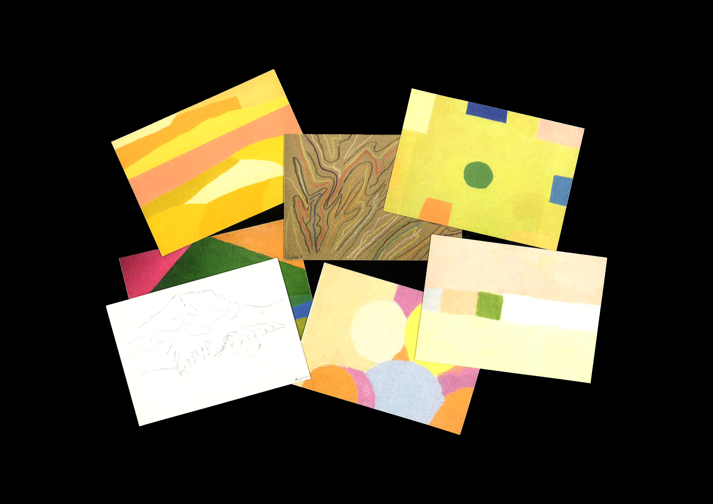
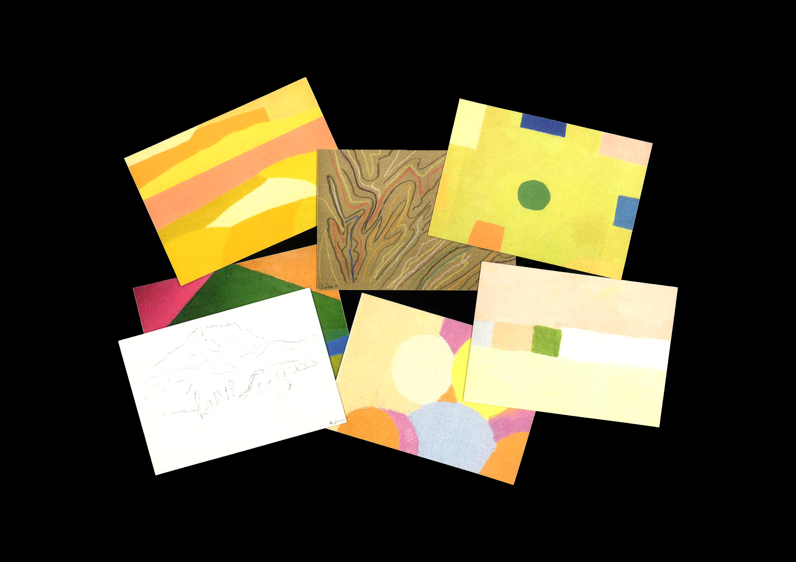

Biographie et cartes postales
10,5 x 14,8 cm et 14,8 x 10,5 cm
20 pages et 10 cartes
Etel Adnan est une poète syro-franco-américano-libanaise, écrivaine et artiste visuelle qui est née au Liban, a fait ses études à Paris, puis a enseigné en Californie pour retourner au Liban, fuir à nouveau pour les États-Unis et finir sa vie en Bretagne.
Les cartes postales ainsi que le leporello, reprenant son parcours dans le monde à l’aide de timbres, rendent compte du cheminement de sa vie et de son art à travers les pays.

 
